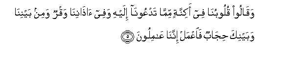
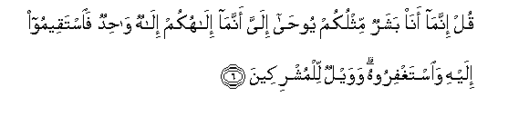
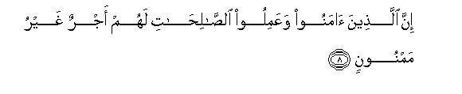

Sacred Texts Islam Index
Hypertext Qur'an Unicode Palmer Pickthall Yusuf Ali English Rodwell
Sūra XLI.: Ḥā-mīm (Abbreviated Letters), or Ḥā-Mīm Sajda, or Fuṣṣilat Index
Previous Next

The Holy Quran, tr. by Yusuf Ali, [1934], at sacred-texts.com
Sūra XLI.: Ḥā-mīm (Abbreviated Letters), or Ḥā-Mīm Sajda, or Fuṣṣilat
Section 1
1. Hā-Mīm:
2. Tanzeelun mina alrrahmani alrraheemi
2. A revelation from (God).
Most Gracious, Most Merciful—
3. Kitabun fussilat ayatuhu qur-anan AAarabiyyan liqawmin yaAAlamoona
3. A Book, whereof the verses
Are explained in detail;—
A Qur-ān in Arabic,
For people who understand;—
4. Basheeran wanatheeran faaAArada aktharuhum fahum la yasmaAAoona
4. Giving Good News
And Admonition: yet most
Of them turn away
And so they hear not.

5. Waqaloo quloobuna fee akinnatin mimma tadAAoona ilayhi wafee athanina waqrun wamin baynina wabaynika hijabun faiAAmal innana AAamiloona
5. They say: "Our hearts are
Under veils, (concealed)
From that to which thou
Dost invite us, and
In our ears is a deafness,
And between us and thee
Is a screen: so do
Thou (what thou wilt);
For us, we shall do
(What we will!)"

6. Qul innama ana basharun mithlukum yooha ilayya annama ilahukum ilahun wahidun faistaqeemoo ilayhi waistaghfiroohu wawaylun lilmushrikeena
6. Say thou: "I am
But a man like you:
It is revealed to me
By inspiration, that your God
Is One God: so stand
True to Him, and ask
For His forgiveness."
And woe to those who
Join gods with God,—
7. Allatheena la yu/toona alzzakata wahum bial-akhirati hum kafiroona
7. Those who practise not
Regular Charity, and who
Even deny the Hereafter.

8. Inna allatheena amanoo waAAamiloo alssalihati lahum ajrun ghayru mamnoonin
8. For those who believe
And work deeds of righteousness
Is a reward that will
Never fail.